Research Desktop Attached Storage (R-DAS)
Overview
R-DAS not an HPC filesystem
R-DAS storage is not mounted on HPC compute or login nodes. Data stored in R-DAS will need to be copied over to the HPC filesystem in order to be accessible to jobs. Instructions on how to access R-DAS from HPC are included below.
Group Sharing
Faculty members/PIs can share their allocations with group members. To do so, in step 6 in the Accessing Your R-DAS Allocation section below, group members will choose the allocation with their faculty member's/PI's NetID.
No Controlled Data
This service is not intended for HIPAA or otherwise controlled data. Please see Secure HPC for more information.
On October 16, 2023, we went live with the Research Desktop Attached Storage Array (R-DAS). R-DAS provides up to 5 TB of no-cost storage capacity for each PI group. Our requirement was to enable our users to easily share data with other research group members. You can treat the allocation as a drive mounted on your local computer. R-DAS is intended for storing open research data, but not controlled or regulated data.
Technical Requirements
R-DAS is a storage service backed by a Qumulo branded storage array. It supports the mounting of SMB shares for SMB 3.1. The supported operating systems are MacOS (Monterey or higher), Linux (kernel 3.7 or higher), and Windows (Windows 10 or 11).
Performance
The storage array is located in the Research Data Center to benefit from the network infrastructure in the Computer Center. The performance you experience will depend on your network connectivity. The best case is likely wired ethernet in a newer building. Off campus usage requires connection to the VPN, and so performance can be variable. Our testing off campus regularly reached 3 MB/s.
Requesting an Allocation
PIs can request an allocation on R-DAS from https://portal.hpc.arizona.edu/portal
- Go to the Storage tab
-
Select Create Shared Desktop Storage under Research Desktop Storage
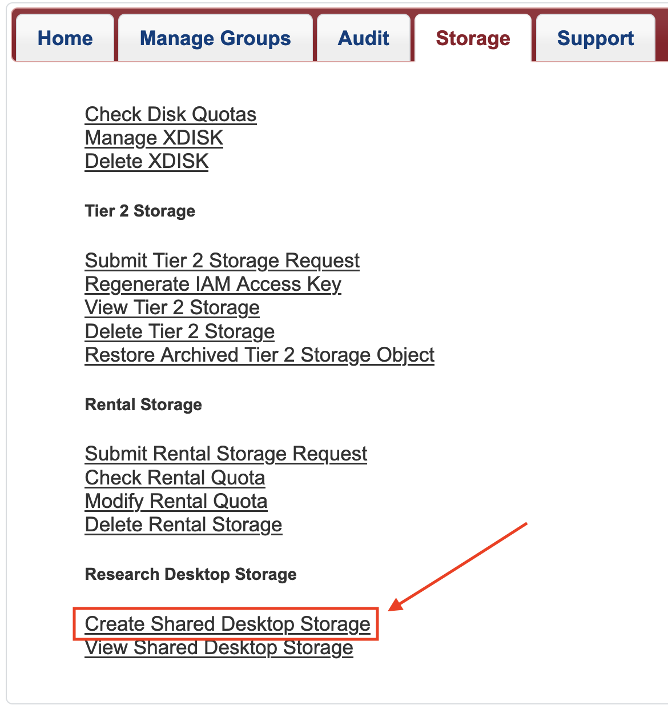
-
Select Create from the window that opens.
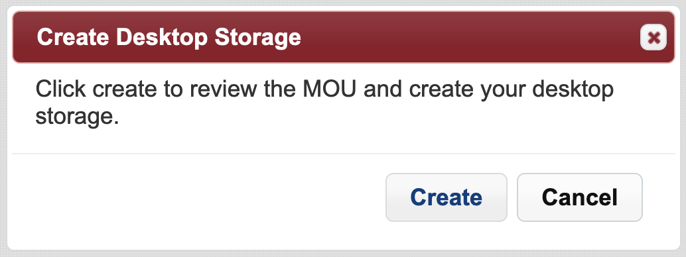
-
A window will open with the MOU agreement. Review it and, if it is acceptable to you, select Agree.
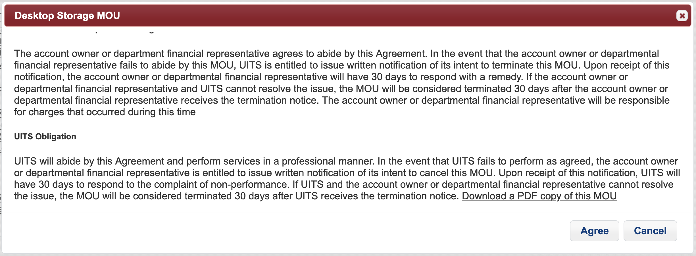
-
You can now select the View Shared Desktop Storage option from the main Storage page in the user portal

Accessing Your R-DAS Allocation
Tip
UArizona IP Address Required: To access your R-DAS allocation you need to be connected to either the UArizona campus network, or the UArizona SSL VPN. For information about connecting to a VPN, see VPN - Virtual Private Network. If you are accessing your R-DAS allocation from an HPC cluster, then you are already on the UArizona campus network and do not need to connect to the UArizona SSL VPN.
R-DAS can be accessed from Linux, MacOS, or Windows. The screenshots are intended to be visual aids, but they include information from the consulting team. When you proceed, please enter your own information.
Choose your operating system
No sudo on HPC
Do not attempt to run sudo commands on HPC, these are only meant for your personal Linux machines. To transfer data between R-DAS and HPC see Access from HPC.
First, install the necessary software packages to access your allocation
Choose your distribution
sudo apt install samba gvfs-backends smbclient
sudo yum install samba gvfs-samba samba-client
Please check the documentation of your distribution.
Next, access your allocation
Choose your connection method
On a desktop environment, such as MATE, GNOME, KDE, you can mount your R-DAS allocation as a local drive with the corresponding file manager (Caja on MATE, GNOME Files, Dolphin on KDE). On HPC, you can use a virtual desktop.
-
Open the file manager (Caja, GNOME Files, Dolphin)
-
Press Ctrl+L. This makes the location bar editable.
-
Enter
smb://rdas.hpc.arizona.eduin the location bar, and press Enter.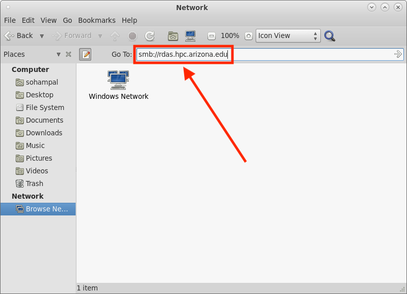
-
A few moments later a window opens, prompting for your Username (
BLUECAT\followed by your UArizona NetID) and Password (UA NetID password). After entering the details, select Connect (on other file managers this may be OK). Some file managers, such as Caja and GNOME Files, also have a Domain field, whereas others, like Dolphin, do not. Either way, you do not need to modify its default value.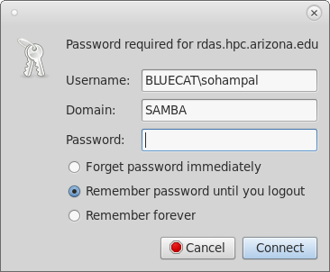
-
Select the allocation named after your group from the list of allocations displayed.
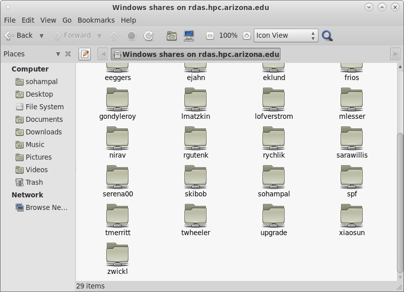
-
On some file managers, such as Dolphin, you can right away access your allocation by double clicking on it. On others, such as Caja and GNOME Files, double clicking on it will open another window prompting for your Username (
BLUECAT\followed by your UArizona NetID) and Password (UA NetID password). Select Connect as user, enter the details, and select Connect. Your allocation will be mounted as a local drive.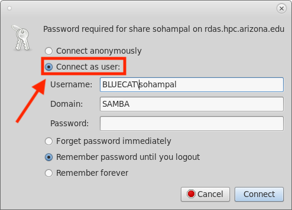
You can interactively browse your R-DAS allocation with smbclient:
smbclient \\\\rdas.hpc.arizona.edu\\<share> -U BLUECAT\\<username>
The <share> is the PI group that you belong to, and <username> is your UArizona NetID. The command will prompt for a password where you will enter your UArizona NetID password. This will start an smb shell. For example:
~ $ smbclient \\\\rdas.hpc.arizona.edu\\sohampal -U BLUECAT\\sohampal
Password for [BLUECAT\sohampal]:
Try "help" to get a list of possible commands.
smb: \>
Try help to get a list of possible commands:
smb: \> help
? allinfo altname archive backup
blocksize cancel case_sensitive cd chmod
chown close del deltree dir
du echo exit get getfacl
. . .
Use the -L flag to get the list of shares on the Array. For example:
smbclient -L \\\\rdas.hpc.arizona.edu -U BLUECAT\\sohampal
Password for [BLUECAT\sohampal]:
Sharename Type Comment
--------- ---- -------
Q$ Disk Default root share for SRVSVC.
ipc$ IPC Named Pipes
upgrade Disk for qumulo upgrades
tmerritt Disk Desktop share for tmerritt created on 09/12/2023 12:24 PM
. . .
Any command that you can run interactively from the smb shell, you can also run non-interactively with the -c flag. For example, to list the files and directories in your share, run:
smbclient \\\\rdas.hpc.arizona.edu\\<share> -U BLUECAT\\<username> -c 'ls'
;. For example to list the contents in a directory in your share, run:
smbclient \\\\rdas.hpc.arizona.edu\\<share> -U BLUECAT\\<username> -c 'cd <directory>;ls'
put, and from your R-DAS share to your local system use get:
smbclient \\\\rdas.hpc.arizona.edu\\<share> -U BLUECAT\\<username> -c 'put <file>'
man smbclient.
If you are on a Mac, then you can mount your R-DAS allocation as a local drive with the following steps:
- Go to Finder
- Select Go from the top menu bar.
- From the drop-down menu, select Connect to Server.
-
In the window that opens, enter
smb://rdas.hpc.arizona.eduin the address bar, and select Connect.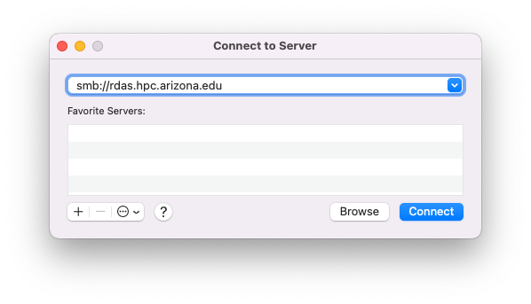
-
After a few moments a window opens prompting for your Name (UA NetID) and Password (UA NetID password). After entering the details, select Connect.

-
A window will open with the list of allocations on the array. Select the allocation named after your group, and then select OK.
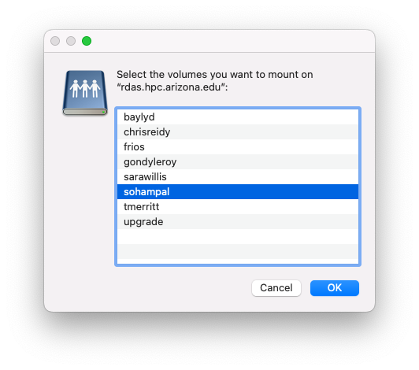
If you are on Windows, you can mount your R-DAS allocation as a local drive with the following steps:
- Open Windows Explorer.
-
Enter
\\rdas.hpc.arizona.eduin the location bar, and press Enter.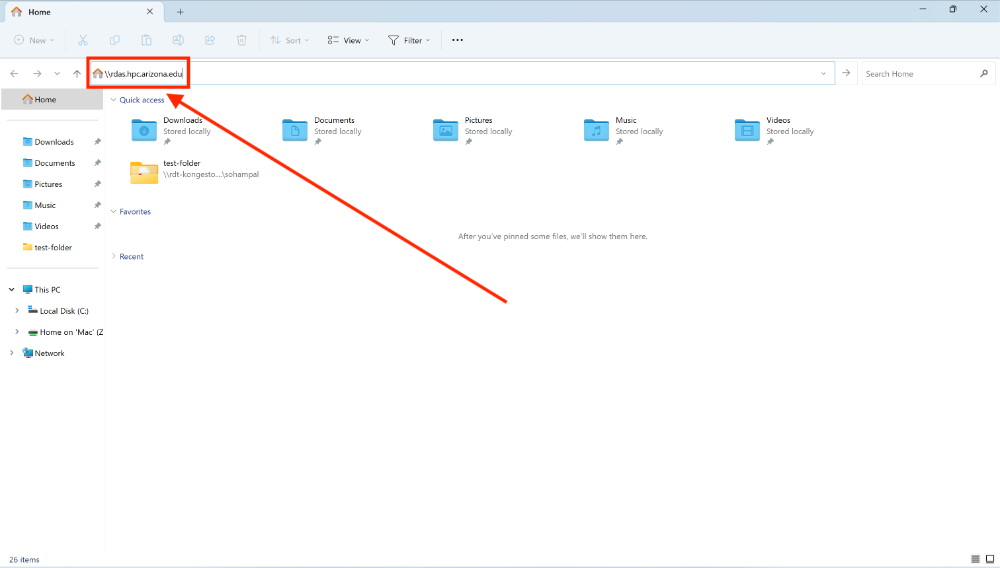
-
A few moments later a window will open, prompting for your Username (
BLUECAT\followed by your UArizona NetID) and Password (UA NetID password). After entering the details, select OK.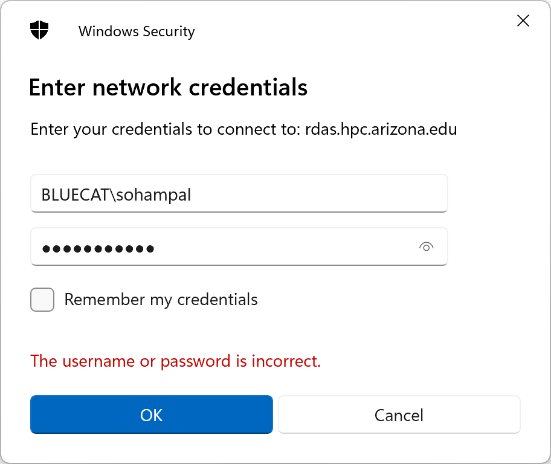
-
Select the allocation named after your group from the list of allocations displayed. You can directly open the allocation by double-clicking on it, or mount it by right clicking on it and selecting Map network drive.
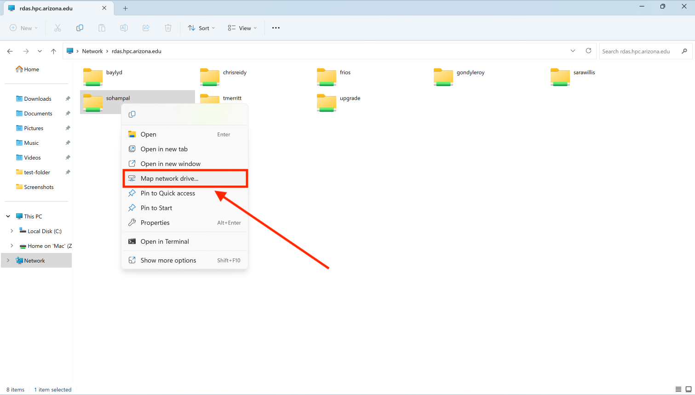
Transfer data between R-DAS and HPC storage
The simplest way to transfer data between your R-DAS share and HPC storage is to first transfer data to your local machine, and then from local machine to the destination. For more information on transferring data from local machine, see Transfers. However if you do not want to store the data to your local machine as an intermediate step, then you can transfer data between R-DAS and HPC storage with the following steps:
- Mount the R-DAS share as a local drive following the steps above.
- Transfer the data using
rsync, see rsync for more information. For example, if your local machine is a Mac, then you can transfer the data from R-DAS to HPC storage with the following:rsync -ravz /Volumes/<share-name>/<path-to-source> <netid>@filexfer.hpc.arizona.edu:<path-to-destination>
The above steps assumes that you know the mount point of the R-DAS share on your local machines:
- On Linux, it might take some amount of sleuthing to find out where it is mounted. File managers dependent on
gvfswill typically mount it under/run/user/<uid>/gvfs. - On a Mac, it will typically be mounted at
/Volumes/<share-name>. - On Window, you will have to map it to a drive.
We recommend that you use rsync to transfer the data from your R-DAS share to HPC storage. However, if you do not know the mount point of the R-DAS share, or if you do not want to use rsync, then the other alternative to transfer data between R-DAS and HPC storage is:
- Start an virtual desktop on Open OnDemand. See Virtual Desktop for more information.
- Mount the R-DAS share following the Linux GUI steps. (1)
- Transfer the data graphically, or using your favorite command line tool from the virtual desktop terminal.
- On the HPC virtual desktop's MATE desktop environment, you can launch the file manager, Caja, by clicking the file drawer like icon in the top bar, or by selecting Applications > System Tools > Caja.